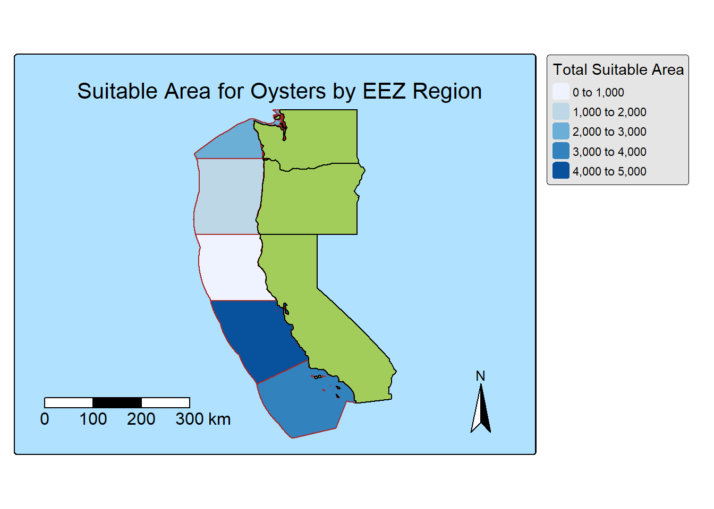
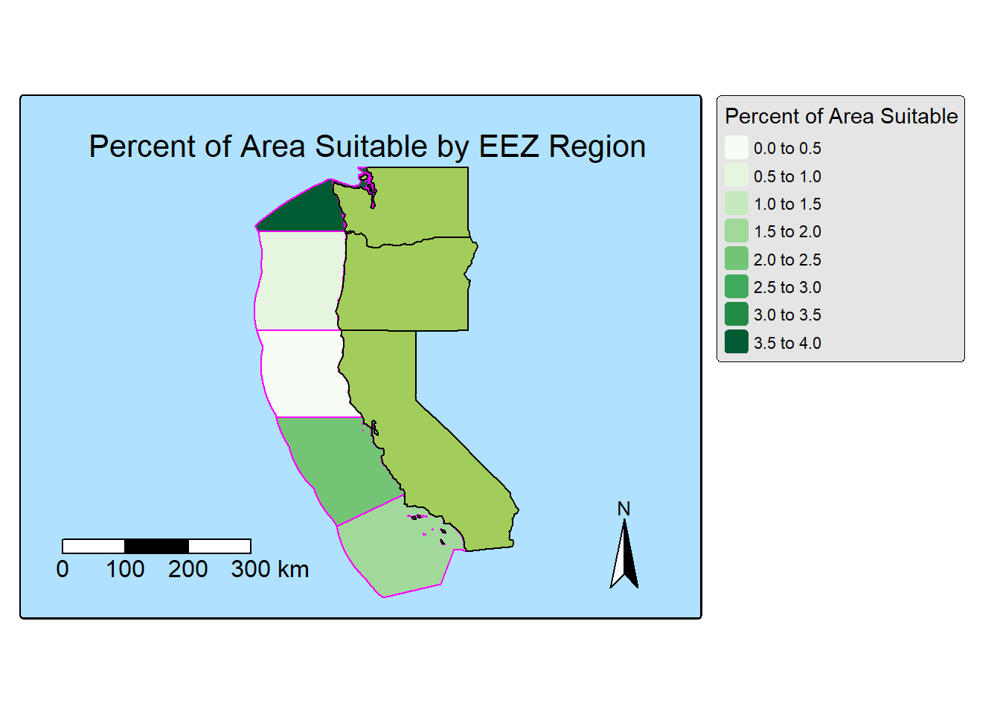
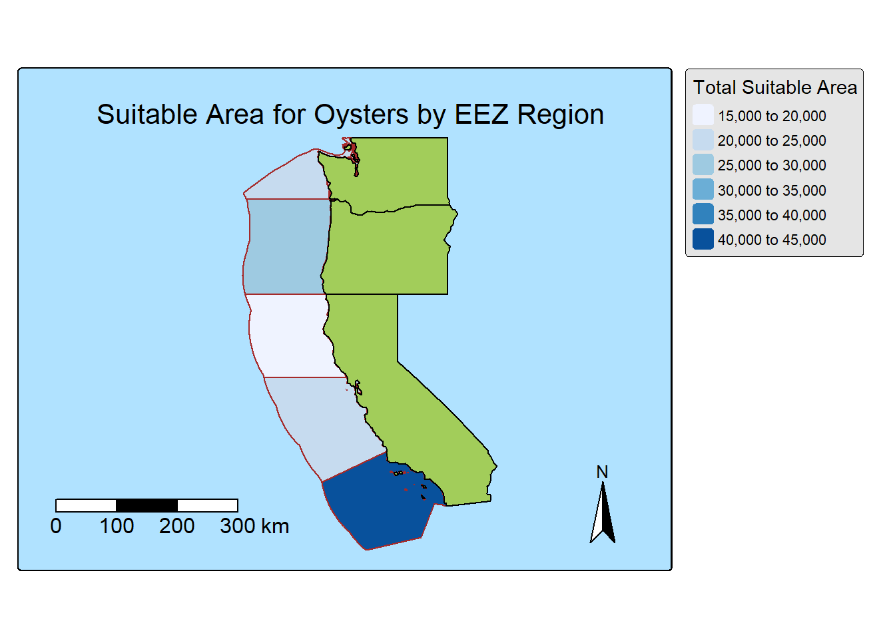
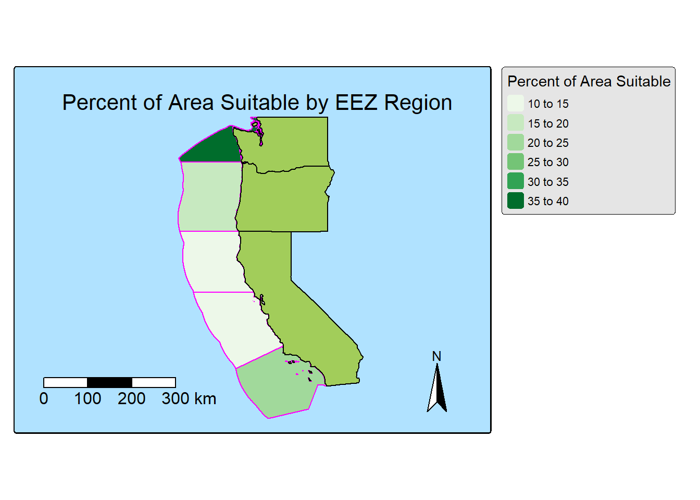

Marine aquaculture has the potential to play an important role in the global food supply as a more sustainable protein option than land-based meat production.1 Gentry et al. mapped the potential for marine aquaculture globally based on multiple constraints, including ship traffic, dissolved oxygen, bottom depth .2
We are tasked with determining which Exclusive Economic Zones (EEZ)
on the West Coast of the US are best suited to developing marine
aquaculture for several species of oysters.
Based on previous research, we know that oysters needs the following
conditions for optimal growth:
We will use average annual sea surface temperature (SST) from the years 2008 to 2012 to characterize the average sea surface temperature within the region. The data we are working with was originally generated from NOAA’s 5km Daily Global Satellite Sea Surface Temperature Anomaly v3.1.
To characterize the depth of the ocean we will use the General Bathymetric Chart of the Oceans (GEBCO).3
We will be designating maritime boundaries using Exclusive Economic Zones off of the west coast of US from Marineregions.org.
To start, we need to load all necessary data and make sure it has the coordinate reference system.
Steps:
load necessary packages and set path
read in the shapefile for the West Coast EEZ
(wc_regions_clean.shp)
read in SST rasters
average_annual_sst_2008.tifaverage_annual_sst_2009.tifaverage_annual_sst_2010.tifaverage_annual_sst_2011.tifaverage_annual_sst_2012.tifcombine SST rasters into a raster stack
read in bathymetry raster (depth.tif)
# load in necessary libraries
library(tidyverse)
library(sf)
library(stars)
library(raster)
library(terra)
library(tmap)
library(ggplot2)
library(here)
library(tmaptools)
library(spData)# read in sea surface temperature data
aa_sst_08 <- rast(here("data", "data", "average_annual_sst_2008.tif"))
aa_sst_09 <- rast(here("data", "data", "average_annual_sst_2009.tif"))
aa_sst_10 <- rast(here("data", "data", "average_annual_sst_2010.tif"))
aa_sst_11 <- rast(here("data", "data", "average_annual_sst_2011.tif"))
aa_sst_12 <- rast(here("data", "data", "average_annual_sst_2012.tif"))
class(aa_sst_08)## [1] "SpatRaster"
## attr(,"package")
## [1] "terra"# combine sst data
aa_sst <- list(aa_sst_08, aa_sst_09, aa_sst_10, aa_sst_11, aa_sst_12)
sst_rast <- rast(aa_sst)
# crs
crs(sst_rast)## [1] "GEOGCRS[\"WGS 84\",\n DATUM[\"unknown\",\n ELLIPSOID[\"WGS84\",6378137,298.257223563,\n LENGTHUNIT[\"metre\",1,\n ID[\"EPSG\",9001]]]],\n PRIMEM[\"Greenwich\",0,\n ANGLEUNIT[\"degree\",0.0174532925199433,\n ID[\"EPSG\",9122]]],\n CS[ellipsoidal,2],\n AXIS[\"latitude\",north,\n ORDER[1],\n ANGLEUNIT[\"degree\",0.0174532925199433,\n ID[\"EPSG\",9122]]],\n AXIS[\"longitude\",east,\n ORDER[2],\n ANGLEUNIT[\"degree\",0.0174532925199433,\n ID[\"EPSG\",9122]]]]"# load in bathymetry data
depth_rast <- rast(here("data", "data", "depth.tif"))Next, we need process the SST and depth data so that they can be combined. In this case the SST and depth data have slightly different resolutions, extents, and positions. We don’t want to change the underlying depth data, so we will need to resample to match the SST data using the nearest neighbor approach.
Steps:
# find the mean SST from 2008-2012
sst_mean <- mean(sst_rast)
# convert the mean from Kelvin to Celsius
sst_mean_c <- (sst_mean - 273.15)# crop the depth data to sst raster extent
crop_depth_rast <- crop(depth_rast, sst_mean_c)
# match the resolultion of both rasters
crop_depth_rast_res <- resample(x = crop_depth_rast,
y = sst_mean_c,
method = "near")# check CRS
crs(sst_mean_c) == crs(crop_depth_rast_res)## [1] FALSE# stack the depth and sea surface temperature rasters
sst_depth_list <- list(sst_mean_c, crop_depth_rast_res)
sst_depth_rast <- rast(sst_depth_list)In order to find suitable locations for marine aquaculture, we’ll need to find locations that are suitable in terms of both SST and depth.
Steps:
# create a reclassification matrix for valid sst locations
sst_rcl <- matrix(c(-Inf, 11, NA,
11, 30, 1,
30, Inf, NA),
ncol = 3,
byrow = TRUE)
# set NA for non-suitable sst
sst_suit <- classify(sst_mean_c, rcl = sst_rcl)
# create a reclassification matrix for valid depth locations
depth_rcl <- matrix(c(-Inf, -70, NA,
-70, 0, 1,
0, Inf, NA),
ncol = 3,
byrow = TRUE)
# set NA for non-suitable depth
depth_suit <- classify(crop_depth_rast_res, rcl = depth_rcl)
# crop sst and depth data based on mask
sst_oyster <- crop(sst_mean_c, sst_suit)
depth_oyster <- mask(crop_depth_rast_res, depth_suit)# combine the rasters
oyster_list <- list(depth_suit, sst_suit)
sst_depth_oyster <- rast(oyster_list)
# overlay the data
oyster_fun <- function(x, y){return(x * y)}
sst_depth_suitable <- lapp(sst_depth_oyster,
fun = oyster_fun)We want to determine the total suitable area within each EEZ in order to rank zones by priority. To do so, we need to find the total area of suitable locations within each EEZ.
Steps:
# load in data
wc_eez_vect <- vect(here("data", "data", "wc_regions_clean.shp"))
wc_eez_vect_area <- shapefile(here("data", "data", "wc_regions_clean.shp"))
wc_eez_vect_area$Area <- area(wc_eez_vect_area)wc_eez_df <- as_tibble(wc_eez_vect_area) |>
dplyr::select(rgn_key, area_km2)
for (i in 1:4) {
print(paste(wc_eez_df[i, 1, 1], "has an area of", round(wc_eez_df[i, 2, 1]), "km^2."))
}## [1] "OR has an area of 179994 km^2."
## [1] "CA-N has an area of 164379 km^2."
## [1] "CA-C has an area of 202738 km^2."
## [1] "CA-S has an area of 206861 km^2."# convert to raster
rast_nam <- names(wc_eez_vect)
wc_eez_rast <- lapply(rast_nam, function(x) {
rasterize(wc_eez_vect, sst_depth_suitable,
field = x,
touches = TRUE)})
# merge objects into a single raster
wc_eez_rast <- do.call("c", wc_eez_rast)# use suitable locations to mask the wc_eez_rast
wc_eez_rast <- project(wc_eez_rast, sst_depth_suitable)
# find the area of raster cell
cell_area <- cellSize(wc_eez_rast, unit = "km")# mask the suitable areas with the wc_eez_raster
wc_eez_suitable <- mask(wc_eez_rast$rgn, sst_depth_suitable)
# extract the areas
area_suitable <- expanse(wc_eez_suitable, unit = "km")
print(paste0("Total suitable area for oysters based on sea surface temperature and depth: ", round(area_suitable[2]), " km^2."))## [1] "Total suitable area for oysters based on sea surface temperature and depth: 11527 km^2."# extract area per suitable region and turn into dataframe
area_region <- expanse(wc_eez_suitable, unit = "km", byValue = TRUE)
area_region <- as_tibble(area_region)
# add a region column
region <- tribble(
~region, ~rgn_key,
"Central California", "CA-C",
"Northern California", "CA-N",
"Oregon", "OR",
"Southern California", "CA-S",
"Washington", "WA")
area_region <- cbind(area_region, region)
# print data
for (i in 1:5) {
print(paste0("Suitable area for oysters in the ", area_region$region[i], " region: ", round(area_region$area[i]), " km^2."))
}## [1] "Suitable area for oysters in the Central California region: 4070 km^2."
## [1] "Suitable area for oysters in the Northern California region: 178 km^2."
## [1] "Suitable area for oysters in the Oregon region: 1074 km^2."
## [1] "Suitable area for oysters in the Southern California region: 3812 km^2."
## [1] "Suitable area for oysters in the Washington region: 2393 km^2."# calculate percent of each area in suitable region
area_per <- left_join(area_region, wc_eez_df, by = "rgn_key")
area_per <- area_per |>
mutate("area_percent" = area/area_km2 * 100)
# print results
for (i in 1:5) {
print(paste0("Percent of suitable area for oysters in the ", area_per$region[i], " region: ", round(area_per$area_percent[i], 2), "%."))
}## [1] "Percent of suitable area for oysters in the Central California region: 2.01%."
## [1] "Percent of suitable area for oysters in the Northern California region: 0.11%."
## [1] "Percent of suitable area for oysters in the Oregon region: 0.6%."
## [1] "Percent of suitable area for oysters in the Southern California region: 1.84%."
## [1] "Percent of suitable area for oysters in the Washington region: 3.58%."Now that we have results, we need to present them!
Maps to create:
map_data <- merge(wc_eez_vect, area_per, by = "rgn_key")
map_data_sf <- st_as_sf(map_data)
suitable_area <- map_data_sf
percent_suitable_area <- map_data_sf
west_coast <- us_states %>%
filter(NAME %in% c('California','Oregon','Washington')) %>%
st_transform(crs = st_crs(suitable_area))
west_coast2 <- us_states %>%
filter(NAME %in% c('California','Oregon','Washington')) %>%
st_transform(crs = st_crs(percent_suitable_area))
# set basemap
tmap_style("natural")
# map data with area and percent of area as the fill
tm_shape(suitable_area) +
tm_compass(type = "arrow", position = c("right", "bottom"), size = 3) +
tm_scalebar(breaks = c(0, 100, 200, 300), position = c("left", "bottom"), text.size = 1, width = 10) +
tm_layout(
asp = 1.3,
title.size = 1.3,
title = "Suitable Area for Oysters by EEZ Region",
title.position = c("center", "top"),
inner.margins = c(.05, 0, .17, 0)) +
tm_fill("area", title = "Total Suitable Area", palette = "blues") +
tm_borders(col = "brown") +
tm_shape(west_coast) + # plot west coast basemap
tm_polygons()
tm_shape(percent_suitable_area) +
tm_compass(type = "arrow", position = c("right", "bottom"), size = 3) +
tm_scalebar(breaks = c(0, 100, 200, 300), position = c("left", "bottom"), text.size = 1, width = 10) +
tm_layout(
asp = 1.3,
title.size = 1.3,
title = "Percent of Area Suitable by EEZ Region",
title.position = c("center", "top"),
inner.margins = c(.05, 0, .17, 0)) +
tm_fill("area_percent", title = "Percent of Area Suitable", palette = "greens") +
tm_borders(col = "magenta") +
tm_shape(west_coast2) + #plot west coast basemap
tm_polygons()
Now that we’ve worked through the solution for one group of species,
let’s update the workflow to work for other species. Let’s create a
function that would allow us to reproduce our results for other species.
The function should be able to do the following:
We can find information on species depth and temperature requirements on SeaLifeBase. Remember, we are thinking about the potential for marine aquaculture, so these species should have some reasonable potential for commercial consumption.
# create function
suitable_range_fun <- function(temp_min, temp_max, depth_min, depth_max, species){
sst_rcl_sp <- matrix(c(-Inf, temp_min, NA,
temp_min, temp_max, 1,
temp_max, Inf, NA),
ncol = 3,
byrow = TRUE)
sst_suit_sp <- classify(sst_mean_c, sst_rcl_sp)
depth_rcl_sp <- matrix(c(-Inf, depth_max, NA,
depth_max, depth_min, 1,
depth_min, Inf, NA),
ncol = 3,
byrow = TRUE)
depth_suit_sp <- classify(crop_depth_rast_res,
rcl = depth_rcl_sp)
sst_crop_sp <- crop(sst_mean_c, sst_suit)
depth_mask_sp <- mask(crop_depth_rast_res, depth_suit_sp)
depth_suit_sp <- project(depth_suit_sp, crs(sst_suit_sp))
list_suit_sp <- list(depth_suit_sp, sst_suit_sp)
sst_depth_suit_sp <- rast(list_suit_sp)
suitable_sp_fun <- function(x, y){return(x * y)}
sst_depth_suitable_sp <- lapp(sst_depth_suit_sp,
fun = suitable_sp_fun)
wc_eez_suitable_sp <- mask(wc_eez_rast$rgn,
sst_depth_suitable_sp)
area_suitable_sp <- expanse(wc_eez_suitable_sp, unit = "km")
print(paste0("Total suitable area for ", species, " based on sea surface temperature and depth: ",
round(area_suitable_sp), " km^2."))
area_region_sp <- expanse(wc_eez_suitable_sp, unit = "km", byValue = TRUE)
area_region_sp <- as_tibble(area_region_sp)
area_region_sp <- cbind(area_region_sp, region)
for (i in 1:5) {
print(paste0("Suitable area for ", species, " in the ", area_region_sp$region[i], " region: ",
round(area_region_sp$area[i]), " km^2."))
}
area_per_sp <- left_join(area_region_sp, wc_eez_df, by = "rgn_key")
area_per_sp <- area_per_sp |>
mutate("area_percent" = area/area_km2 * 100)
for (i in 1:5) {
print(paste0("Suitable percent area for ", species, " in the ", area_region_sp$region[i], " region: ",
round(area_per_sp$area_percent[i], 2), "%"))
}
map_data_sp <- merge(wc_eez_vect, area_per_sp, by = "rgn_key")
map_data_sp_sf <- st_as_sf(map_data_sp)
suitable_area_sp <- map_data_sp_sf
percent_suitable_area_sp <- map_data_sp_sf
print(paste0("Suitable Area for ", species, " by EEZ Region"))
map1 <- tm_shape(suitable_area_sp) +
tm_compass(type = "arrow", position = c("right", "bottom"), size = 3) +
tm_scalebar(breaks = c(0, 100, 200, 300), position = c("left", "bottom"), text.size = 1, width = 10) +
tm_layout(
asp = 1.3,
title.size = 1.3,
title = "Suitable Area for Oysters by EEZ Region",
title.position = c("center", "top"),
inner.margins = c(.05, 0, .17, 0)) +
tm_fill("area", title = "Total Suitable Area", palette = "blues") +
tm_borders(col = "brown") +
tm_shape(west_coast) +
tm_polygons()
map2 <- tm_shape(percent_suitable_area_sp) +
tm_compass(type = "arrow", position = c("right", "bottom"), size = 3) +
tm_scalebar(breaks = c(0, 100, 200, 300), position = c("left", "bottom"), text.size = 1, width = 10) +
tm_layout(
asp = 1.3,
title.size = 1.3,
title = "Percent of Area Suitable by EEZ Region",
title.position = c("center", "top"),
inner.margins = c(.05, 0, .17, 0)) +
tm_fill("area_percent", title = "Percent of Area Suitable", palette = "greens") +
tm_borders(col = "magenta") +
tm_shape(west_coast2) +
tm_polygons()
print(map1)
print(map2)
}# running the function with a species of our choice
# for this example, lets use King Crab
suitable_range_fun(temp_min = 0, temp_max = 25,
depth_min = 160, depth_max = -1013,
species = "King Crab")## [1] "Total suitable area for King Crab based on sea surface temperature and depth: 1 km^2."
## [2] "Total suitable area for King Crab based on sea surface temperature and depth: 132383 km^2."
## [1] "Suitable area for King Crab in the Central California region: 20385 km^2."
## [1] "Suitable area for King Crab in the Northern California region: 17027 km^2."
## [1] "Suitable area for King Crab in the Oregon region: 28833 km^2."
## [1] "Suitable area for King Crab in the Southern California region: 42328 km^2."
## [1] "Suitable area for King Crab in the Washington region: 23810 km^2."
## [1] "Suitable percent area for King Crab in the Central California region: 10.05%"
## [1] "Suitable percent area for King Crab in the Northern California region: 10.36%"
## [1] "Suitable percent area for King Crab in the Oregon region: 16.02%"
## [1] "Suitable percent area for King Crab in the Southern California region: 20.46%"
## [1] "Suitable percent area for King Crab in the Washington region: 35.59%"
## [1] "Suitable Area for King Crab by EEZ Region"
Hall, S. J., Delaporte, A., Phillips, M. J., Beveridge, M. & O’Keefe, M. Blue Frontiers: Managing the Environmental Costs of Aquaculture (The WorldFish Center, Penang, Malaysia, 2011).↩︎
Gentry, R. R., Froehlich, H. E., Grimm, D., Kareiva, P., Parke, M., Rust, M., Gaines, S. D., & Halpern, B. S. Mapping the global potential for marine aquaculture. Nature Ecology & Evolution, 1, 1317-1324 (2017).↩︎
GEBCO Compilation Group (2022) GEBCO_2022 Grid (doi:10.5285/e0f0bb80-ab44-2739-e053-6c86abc0289c).↩︎